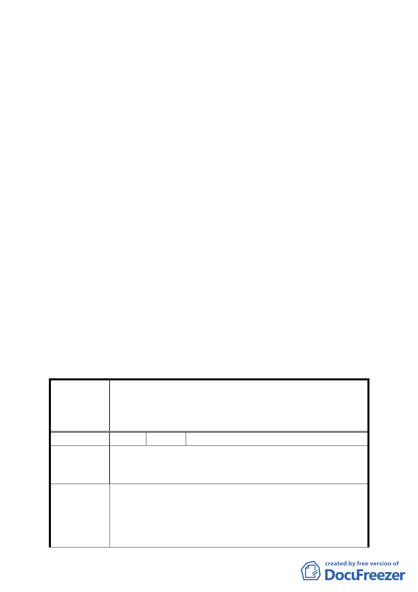

點規定，文字請修正為「依現行『臺北市土地使用分區管
制規則』規定辦理」。
4.計畫書第 11 頁二、其他，建議計畫書文字比照已公告實施
之臺北好好看案例，刪除「（如附件一）」，並增列「實
際容積獎勵額度，由臺北市都市設計及土地使用開發許可
審議委員會依本案所規劃之開放空間，審酌其必要性、開
放性及公益性，就實際面積再核予容積獎勵額度」。
5.修正後計畫書第 11 頁柒、都市設計準則，請比照已公告實
施之「2010 年臺北好好看」都市計畫變更案件，增列「建
築基地應依建築技術規則綠建築專章規定檢討」。
6.修正後計畫書第 13 頁「拾、其他第三點、本計畫未規定事
項悉依相關法令及原計畫規定辦理」建議修正為「三、本
計畫未規定事項悉依相關法令及 92.1.7 修訂『臺北市基隆
河（中山橋至成美橋段）附近地區細部計畫暨配合修訂主
要計畫案內『基隆河（中山橋至成美橋）附近地區土地使
用分區與都市設計管制要點』』案規定辦理」。
（六）其他：都市計畫法第 24 條係屬土地所有權人自提計畫變更
之法源依據，本案請依規定於計畫書後補附所有土地所有
權人之同意書。
二、公民或團體陳情意見審決如後附綜理表。
臺北市都市計畫委員會公民或團體所提意見綜理表
修訂臺北市基隆河（中山橋至成美橋段）附近地區細部計畫
案 名 娛樂區（供娛樂購物中心使用）街廓編號 B2 基地（中山區
金泰段 16-2、16-3、16-6 地號）土地使用分區管制規定與
都市設計管制要點計畫案
編 號 1 陳情人 陳議員玉梅
目前大彎北段商業區之建物使用現況，大多違規作為住宅使
陳 情 理 由 用。大彎北段之商業區、娛樂區已有部分土地依現行之法令
完成開發建築。
為避免都市計畫變更公告實施後，造成未來有更大量之違規
使用情事發生，故建議地上 1 至 3 層樓維持商業使用，地上
建 議 辦 法 4 層樓以上開放作為住宅使用，住宅使用比例≦2/3 總容積，
高度限制以不阻擋河岸景觀，及免辦環境影響評估審查之
70 公尺為原則。為避免不切現況發展，建議取消「街廓 A1、
- 34 -